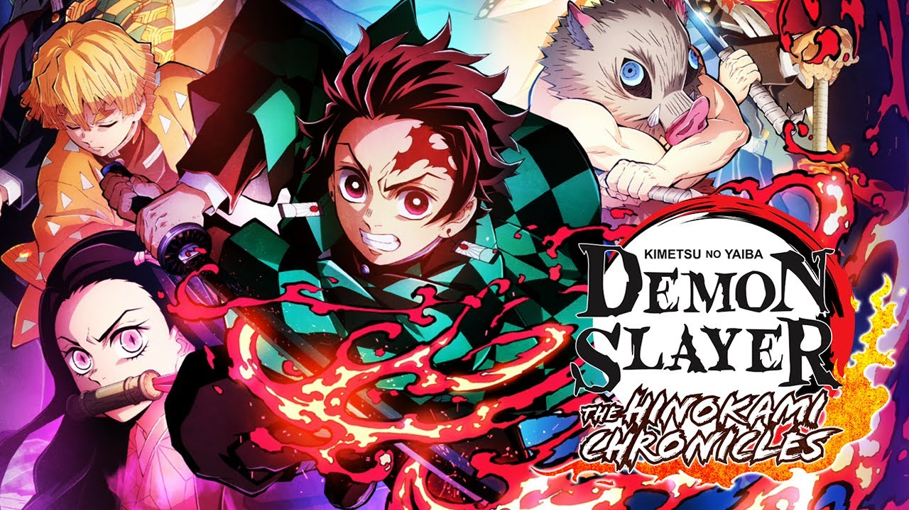

23/05/2022
103

Demon slayer
Após um ataque de demônios na vila, o jovem Tanjir Kamado perdeu praticamente toda
sua família. Apenas sua irmã mais nova, Nezuko, sobreviveu, mas foi transformada em
um demônio. Para vingar sua família e recuperar a irmã, Tanjir se torna um caçador
de demônios e parte em busca de justiça.